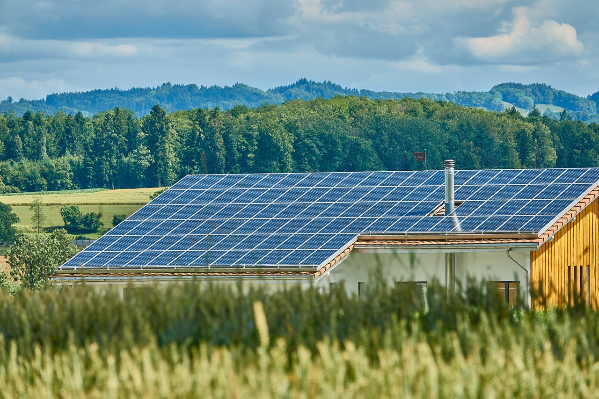

S O L A R
Optimize Your House!

Solar panels are a great way to save both money and the planet!
Introduction to solar energy
What is it?
Solar energy, directly converting light from the Sun into electrical power, is an amazing tool towards the fight against climate change. It addresses a major source of fossil fuel emissions (coal/gas power plants), can often return its investment in less than ten years, and is more affordable than ever due to government incentives. The Department of Energy calls solar energy “the fastest growing and most affordable source of new electricity in America.” So - how can Americans use it?
To start your solar installation project, you first need to estimate how much potential your roof has to generate electricity. There are many online resources for this, many of which have been vetted by the Department of Energy. For example:
- EnergySage This resource estimates the amount of savings solar could provide you, using your electricity bill and address. It also lets you comparison shop among different local providers so you save even more on your installation.
- PVWatts This resource estimates the amount of energy production your roof can bring, as well as estimating the worth of any excess power generation if you sell the excess power to the general electricity grid.
- Sun Number This resource gives an extremely accurate score for your home’s solar potential, including everything from roof shape from aerial photography to atmospheric conditions.
Once you decide your home works for solar panels and you choose your provider, you can now look into government incentives. One of the most common incentives is tax credits, which directly reduce your tax liability. Some sources for these credits include:
- The DoE’s official guide to federal tax credits contains information on how to receive tax credits and how much they are worth. These credits are worth 30% of your tax credits if you install solar panels before 2032.
- DSIRE is even more hands-off; simply put in your zip code and it will provide a detailed list of all local solar-related policies and incentives in your area.
- If you’ve selected a solar provider, you can ask them about the incentives in your area! After all, it’s in their interest to provide you with the best and cheapest solar installation possible, and they will know from experience what resources are available to homes in your area.
Of course, solar energy isn’t all – pardon the pun – sunshine and rainbows. There are many potential downsides to acknowledge before you invest in this resource:
- Upfront Cost: Despite the financial incentives offered by the government for installing solar and the money saved by owning panels, the upfront cost can still be prohibitive and should not be undertaken lightly.
- Aesthetics: Solar panels do make a notable presence on a roof, which can be problematic to some people. However, if this is a concern, you can place the panels on the back of your house to reduce their visual effect from the street.
- Maintenance: Solar panels are low maintenance, but nothing is no maintenance. To keep the solar panels at maximum efficiency, debris needs to be kept off the roof, which will take time or money to do.
What are its advantages?
reduce energy bill (include ROI time)
government incentives
reduced environmental impact
Considerations
Best for homes without trees nearby and good roof area, maintenance/lifetime
and the big one: reduced environmental impact.
Hopefully this guide has helped you decide whether or not you want to invest in solar panels and, if you do, how to get started on the process. And even if you decide now isn’t the right time, make sure you reconsider every so often. As time passes, solar keeps getting cheaper and more efficient, so in just a few short years, it may make sense to go all-in on this essential technology to fight climate change.